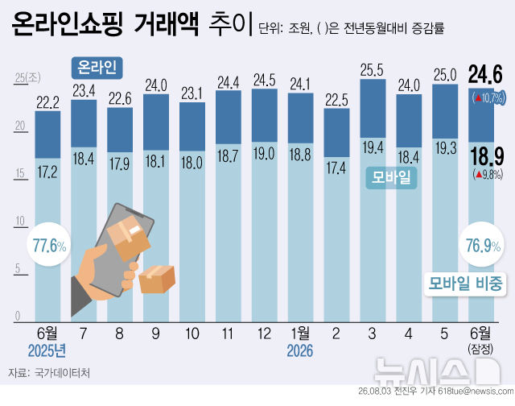
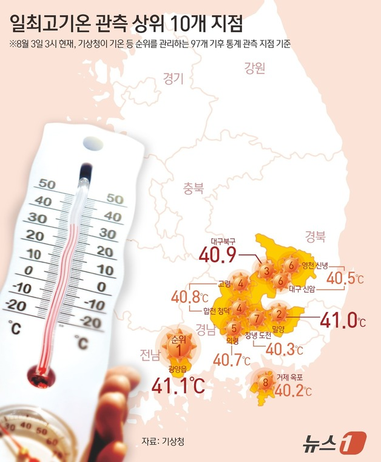
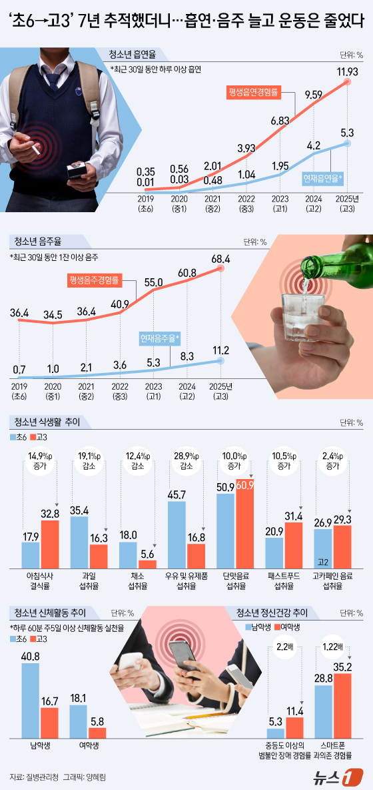
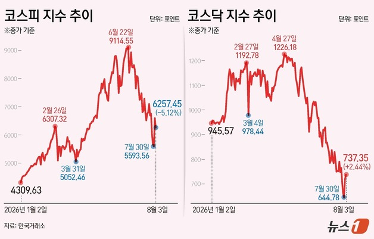
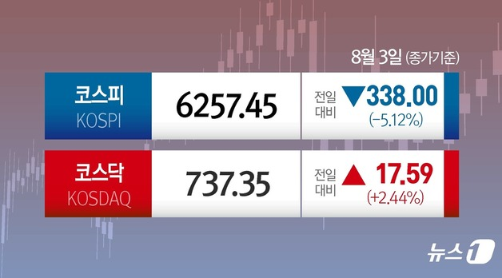
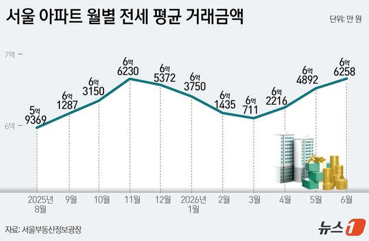
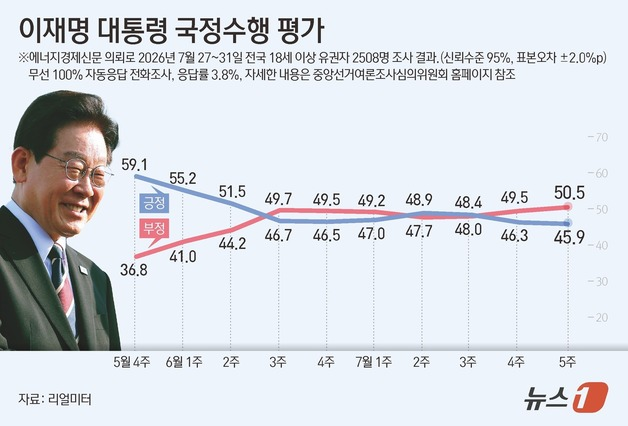
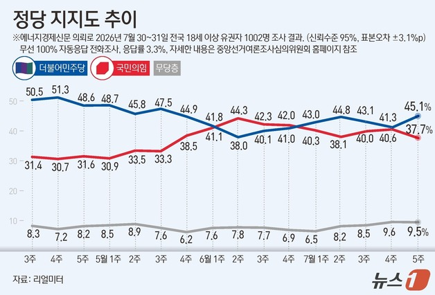

8/4(화) · 기준 2026-08-03 22:00 ~ 2026-08-04 06:00
엑셀 다운로드
"이미지 다운로드"를 누르거나, 이미지를 길게 눌러 저장한 뒤 카톡으로 보내세요.









![[연합뉴스] 3일 주요 지역 최고기온](images/graphics/연합뉴스_01.jpg)
![[연합뉴스] 종합부동산세 개편 적용 예시](images/graphics/연합뉴스_02.jpg)
![[연합뉴스] 서울 고가 아파트 보유세 시뮬레이션](images/graphics/연합뉴스_03.jpg)
![[연합뉴스] 부동산 세제개편안 주요 내용②](images/graphics/연합뉴스_04.jpg)
![[연합뉴스] 부동산 세제개편안 주요 내용①](images/graphics/연합뉴스_05.jpg)
![[연합뉴스] 청소년 흡연·음주 경험률](images/graphics/연합뉴스_06.jpg)
![[뉴시스] 정부, 비과세·감면 115개 손질…하이브리드차 감면 종료 [세제개편]](images/graphics/뉴시스_07.jpg)
![[뉴시스] 강남 아파트 보유세 1810만→2764만원…비거주 땐 3318만원 [세제개편]](images/graphics/뉴시스_08.jpg)
![[뉴시스] 양도세 중과 한시적 완화… ‘보유공제’는 ‘거주공제’로 전환 [세제개편]](images/graphics/뉴시스_09.jpg)
![[뉴시스] '주가 누르기' 차단…상속·증여세 최대 6.5년치 주가로 산정[세제개편]](images/graphics/뉴시스_10.jpg)
![[뉴시스] 내 집 실거주하면 종부세 덜 낸다 [세제개편]](images/graphics/뉴시스_11.jpg)
![[뉴시스] 맞벌이 근로장려금 최대 360만원…청년 월세공제 17%로 확대[세제개편]](images/graphics/뉴시스_12.jpg)
![[뉴시스] 국내 생산량만큼 세금 깎아준다…정부, 한국판 IRA 추진[세제개편]](images/graphics/뉴시스_13.jpg)
![[뉴시스] 온열질환자 누적 2025명…수도권에 첫 폭염중대경보 발효](images/graphics/뉴시스_14.jpg)
![[뉴스1] [그래픽] 종합부동산세 개편에 따른 적용사례](images/graphics/뉴스1_16.jpg)
![[뉴스1] [그래픽] 2026 세제개편안 중소·벤처기업 경쟁력 강화](images/graphics/뉴스1_17.jpg)
![[뉴스1] [그래픽] 2026 세제개편안 비과세·감면 정비](images/graphics/뉴스1_18.jpg)
![[뉴스1] [그래픽] 2026 세제개편안 지방주도성장 강화](images/graphics/뉴스1_19.jpg)
![[뉴스1] [그래픽] 2026 세제개편안 부동산 세제 합리화-종합부동산세](images/graphics/뉴스1_20.jpg)
![[뉴스1] [그래픽] 2026 세제개편안 생산적금융 및 자본시장 지원](images/graphics/뉴스1_21.jpg)
![[뉴스1] [그래픽] 2026 세제개편안 가업상속공제 개편 및 사업승계지원](images/graphics/뉴스1_22.jpg)
![[뉴스1] [그래픽] 2026 세제개편안 미래성장동력 확충](images/graphics/뉴스1_23.jpg)
![[뉴스1] [그래픽] 온열질환자 발생 현황](images/graphics/뉴스1_24.jpg)


![[속보] 정청래, 민주당 대표 부울경 순회경선서 김민석에 2.8%p 차 앞서](images/article_04.png)


!['주가 누르기' 꼼수 철퇴…적발 땐 주식평가액 30% 높여 세금[2026세법]](images/article_10.png)


{kind=link}
{kind=link}
{kind=link}
{kind=link}
{kind=link}
{kind=link}
{kind=link}
{kind=link}